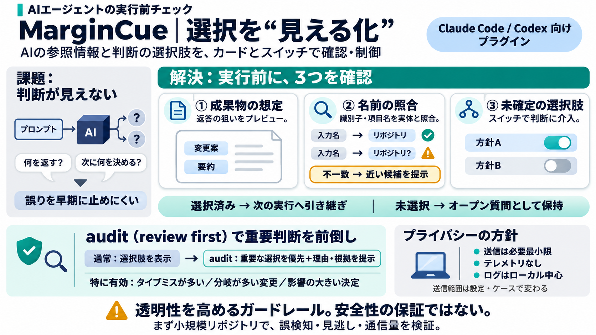

Merge queue for AI coding agents: Claude Code, Codex, Cursor
Merget compares prepared work with the new target. If an assumption no longer holds, the work is prepared again. ###…

Claude Code / Codex の実行前に、AIが参照しそうな情報と意思決定の“選択肢”をカードUIで可視化し、ユーザーがスイッチで制御できるプラグインです。
エージェントはプロンプトを読み、内部の判断で分岐し、回答を生成しますが、その“選び方”が見えないとミスを早期に止めにくくなります（ブラックボックス化）。
MarginCue は、AIの実行前に「読み取り内容」と「分岐の選択肢」を提示し、必要なら review first（audit）で重要な判断を先にフラグします。
プロンプト内の“名前”（識別子・項目名）をリポジトリ実体に照合し、存在しない場合は近い候補を出して送信前にフラグします。
可視化は主に「①成果物の想定」「②名前の一致/不一致」「③AIの未確定な選択肢」の3点です（Q1）。
ユーザーが選んだ内容はデフォルトで次の実行へ引き継がれ、残りは“オープン質問”として未選択扱いになります（実行の続きが作りやすい）。
audit（review first）を有効にすると、重要な選択肢が優先表示され、理由と根拠（証拠）付きで事前プレビューできるようになります（Q2）。
存在しない名前を事前に警告し、近い候補を提示することで、タイプミスや誤った用語による誤参照のリスクを下げます。
入力文章の送信量を抑える方針（必要時のみ差分送信など）や、テレメトリなし・ログはローカル中心が示されています（README説明）。
効果が出やすいのは、タイプミスが多い場合・変更で分岐が多い場合・誤ると影響が大きい意思決定です。audit 併用が特に相性良いと考えられます（Q5・意見）。
MarginCue は、AIエージェントの判断をブラックボックスにせず「事前・事後に観察・介入」する体験を提供します。ただし精度や安全性の“保証”は README だけでは検証できないため、まず小規模リポジトリで確認してから本番導入が現実的です。
Merget compares prepared work with the new target. If an assumption no longer holds, the work is prepared again. ###…
以上の理由から、簡単に作れる占い頼みの投資判断AIエージェントを作ることにした。 もちろん、自分なら市場平均に勝てる自信があるという猛者は、独自の投資判断AIエージェントを作るときの参考にしていただきたい。 以下は、今回作成したAIエ…
3種類のエージェントの役割を知ろう (2026/9/22) - Metaのコーディングエージェント「Muse Code」がWindowsにネイティブ対応 ～WSLは不要 x64/ARM64にネイティブ対応、「PowerS…
# GitHub ID: WGf4o1saQ1yD Website: www.github.com Headquarters: San Francisco, CA, United States LinkedIn: www.linkedin.…
is responsible for running all of the agents that run monitoring, logging, security agents, things like that—the system …